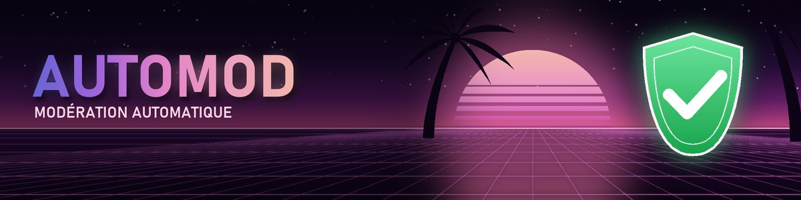

La modération qui fait la différence entre une vanne et une insulte
AI Automod protège ton serveur Discord contre le spam, les raids, les arnaques et la toxicité. Son IA comprend le second degré : les blagues entre potes passent, les vraies attaques sont supprimées.
Verdicts réels de l'IA d'Automod sur ces messages.
Tout pour protéger ton serveur
Une seule appli pour la modération automatique, la sécurité du serveur, les logs et la communauté. Chaque protection se règle de 0 à 100 % de sensibilité.
IA : humour ou sérieux
Pour chaque message, l'IA juge la gravité et le ton. Une vanne avec « mdr » ou 😂 compte moins qu'une vraie attaque, et ta sensibilité décide du reste.
Comment marche l'IA →Modération automatique
Insultes et propos haineux, contenu sexuel, données personnelles, arnaques, spam, mentions de masse et liens interdits.
Les modules →Anti-raid et anti-nuke
Mode raid automatique, verrouillage en un clic, régulation des salons et des rôles, modération de masse, anti bot, anti comptes récents.
Les protections →Captcha à l'arrivée
Les nouveaux recopient le code d'une image avant de voir le serveur. Les bots et les comptes de raid restent dehors.
Le captcha →Smartlog
Des logs interactifs avec le contexte du membre et des boutons : débannir, lever un mute, retirer un warn, supprimer un message.
Les logs →Tableau de bord web
Règle tout depuis ton navigateur : modules, logs, sanctions, membres, statistiques, bienvenue, rôles.
Le tableau de bord →Sanctions complètes
Ban, kick, mute, warn, historique, cases numérotées, récidive automatique et lien d'appel pour les bannis.
Les sanctions →Bypass
Fais ignorer un membre, un rôle ou un salon par Automod, pour un temps donné ou sans limite, sans lui donner de permission.
Le bypass →Communauté
Bienvenue, au revoir, rôles automatiques, rôles par réaction, compteur de membres, suggestions et absences du staff.
La communauté →Tu utilises déjà l'AutoMod intégré à Discord ? Voir ce qu'AI Automod fait en plus, et comment combiner les deux →
Prêt en 2 minutes
Pas besoin d'être expert : l'assistant configure tout pour toi.
Ajoute Automod
Un clic sur « Ajouter à Discord », choisis ton serveur et garde les permissions proposées.
Lance /setup
Le mode rapide crée les salons de logs, détecte ton staff et active les protections recommandées.
C'est protégé
Teste sans risque avec =testmode on : le bot détecte
mais ne sanctionne personne.

Des offres simples
Le plan s'applique à tout le serveur. Tape /plans sur Discord pour t'abonner.
🆓 Free
Gratuit pour toujours
- Commandes de base (ban, kick, mute, warn…)
- Modération auto par règles : insultes, contenu sexuel, données perso, arnaques, spam, mentions, liens
- Sensibilité standard
- Anti-raid, anti-nuke, anti bot, anti comptes récents
- Logs et tableau de bord web
- Bienvenue, rôles, absences, suggestions
- Support standard (24-48 h)
⭐ Pro
2,99 € pour 30 jours
- Tout le plan Free
- Sensibilité réglable pour chaque module
- Captcha à l'arrivée
- Protection critique du serveur
- Convocations
- Smartlog : logs avec boutons d'action
- Sanctions groupées
- Support prioritaire (12-24 h)
💎 Max
9,99 € pour 30 jours
- Tout le plan Pro
- Mode IA (bêta) sur les modules de contenu
- Fait la différence entre humour et insulte
- Moins de faux positifs
- Support personnel
Sans renouvellement automatique : un rappel arrive avant la fin. Paiement par carte sur la page sécurisée du prestataire, activé en moins d'une minute. Ou branche ta propre clé d'IA pour le mode IA sans abonnement.
Questions fréquentes
Une autre question ? Passe sur le serveur support.
Automod est-il gratuit ?
Oui. Le plan Free comprend les commandes de base, toute la modération automatique par règles (insultes, contenu sexuel, données perso, arnaques, spam…), l'anti-raid, l'anti-nuke, les logs et le tableau de bord, sans limite de temps. Pro (2,99 €) ajoute la sensibilité réglable, le captcha, la protection critique du serveur, Smartlog et les convocations ; Max (9,99 €) ajoute l'IA. 30 jours, sans renouvellement automatique.
Comment l'IA fait-elle la différence entre une blague et une insulte ?
Pour chaque message, l'IA donne la catégorie (insulte, contenu sexuel, données perso, arnaque), la gravité et le ton : humour ou sérieux. Une vanne entre potes avec « mdr » ou 😂 compte un cran de moins qu'une vraie attaque, et c'est la sensibilité choisie par le serveur qui décide de sanctionner ou non.
Comment installer Automod ?
Ajoute le bot avec le bouton « Ajouter à Discord », puis tape /setup sur ton serveur : le mode rapide crée les salons de logs, détecte les rôles du staff et active les protections recommandées en un clic.
Quelle différence avec l'AutoMod intégré à Discord ?
AutoMod, l'outil de Discord, bloque des mots-clés et du spam avant publication, avec des listes toutes prêtes en anglais. AI Automod est un bot indépendant qui ajoute la modération en français, la compréhension du ton par IA, les sanctions avec historique, l'anti-raid, l'anti-nuke, le captcha et les logs. Les deux peuvent tourner ensemble.
Automod parle-t-il anglais ?
Oui. Au premier /setup, tu choisis le français ou l'anglais pour tout le serveur : messages, panneaux, logs et tableau de bord.
Que fait Automod de mes messages ?
Il les analyse pour modérer le serveur et garde l'historique des sanctions. Le texte d'un message n'est envoyé à une IA que si le serveur a activé le mode IA. Aucune donnée n'est vendue.
J'ai été sanctionné sur un serveur, que faire ?
Chaque serveur décide de ses propres règles et sanctions : contacte le staff de ce serveur (le message privé de sanction contient son lien d'appel s'il en a un). L'équipe d'Automod ne peut pas lever une sanction à sa place.
Protège ton serveur dès maintenant
Gratuit, en français et en anglais, prêt en 2 minutes.